▶ Watch: Puhastusekpert Parent Isolation Check (video)

This document demonstrates the complete end-to-end flow for OptiqoFlow's multi-tenant data architecture, showing how data is isolated per-tenant at both the row and column level.
Three files were modified to enable creating users with a password (bypassing magic-link email for demos):
server/api/organizations/[id]/users.post.ts — Optional password param in API; sets
has_password metadata
components/AddUserModal.vue — Added "Set Password" field to formcomposables/useUsersManagement.ts — Passes password through to APISelected 4 tables for the Beta Facilities tenant: sites (17 cols),
rooms (28 cols), work_orders (36 cols), quality_inspections (43 cols).
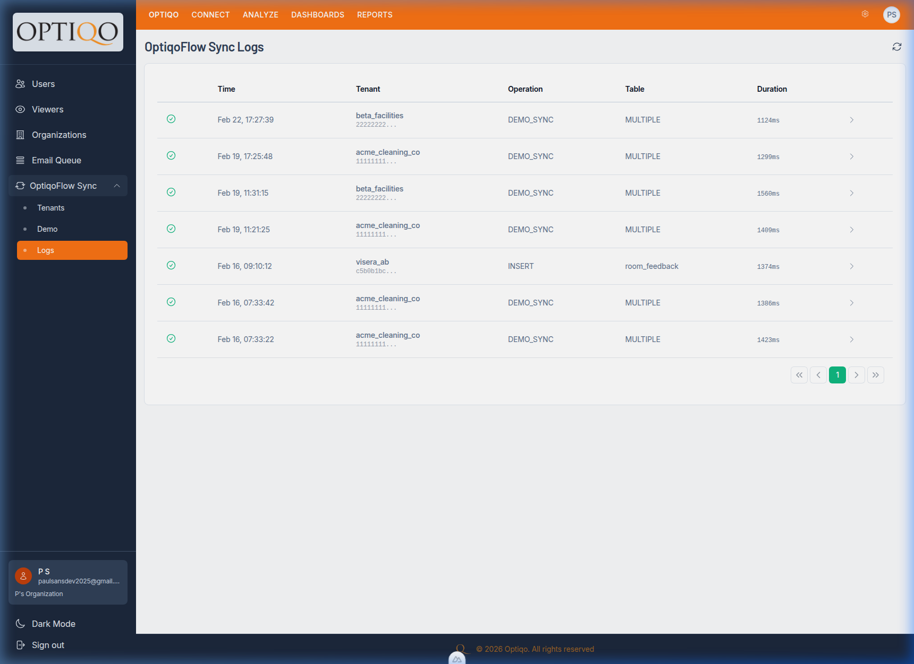
DB result: 3 views created in tenant_beta_facilities schema (sites, rooms,
quality_inspections). The work_orders view was correctly omitted because Beta Facilities has 0 work
order rows — demonstrating row-level isolation.
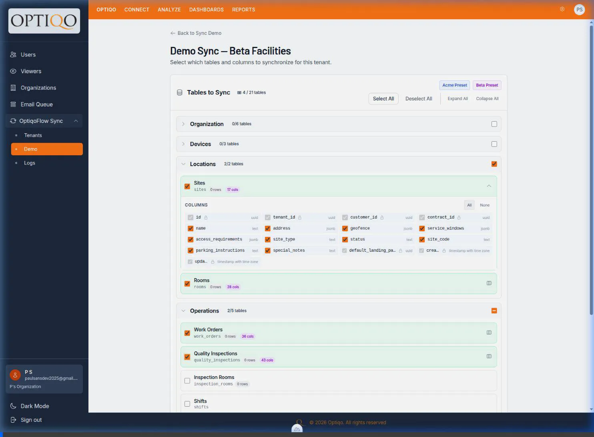
Created "Beta Healthcare Demo" organization linked to the Beta Facilities tenant.
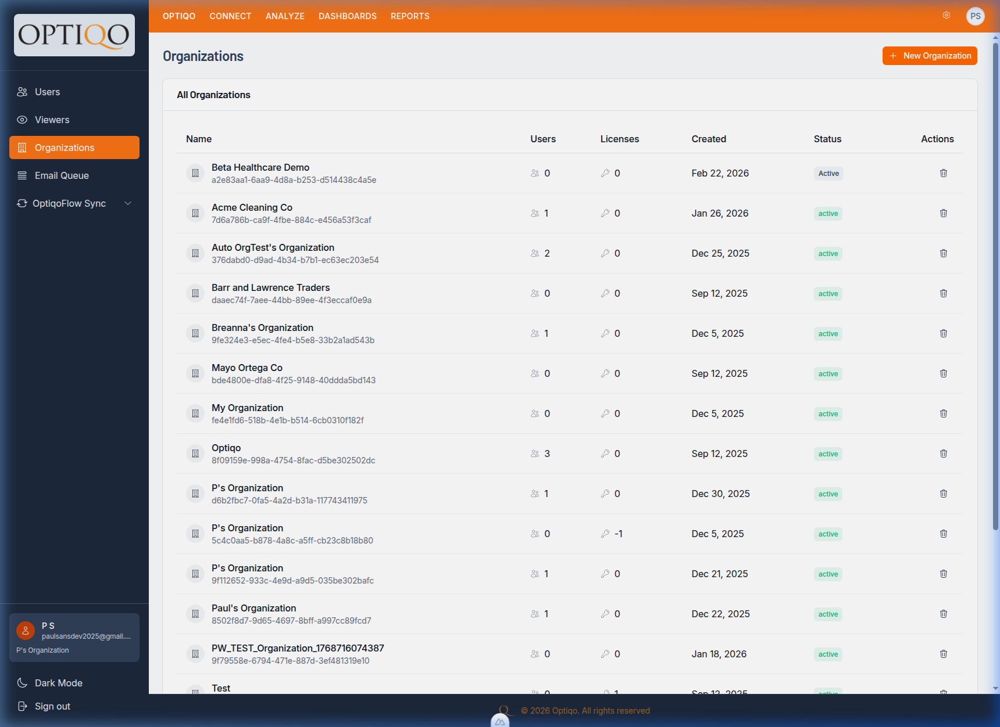
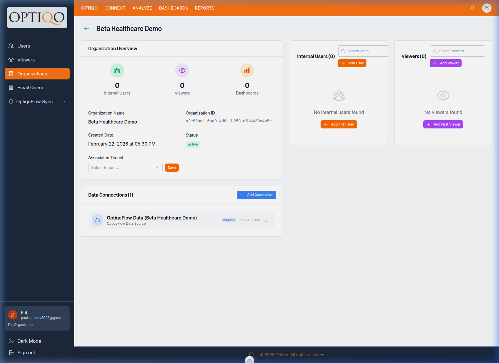
| Item | Value |
|---|---|
| Org Name | Beta Healthcare Demo |
| Org ID | a2e83aa1-6aa9-4d8a-b253-d514438c4a5e |
| Tenant | Beta Facilities (22222222-...) |
| Data Connection | OptiqoFlow Data (Beta Healthcare Demo), immutable, PostgreSQL |
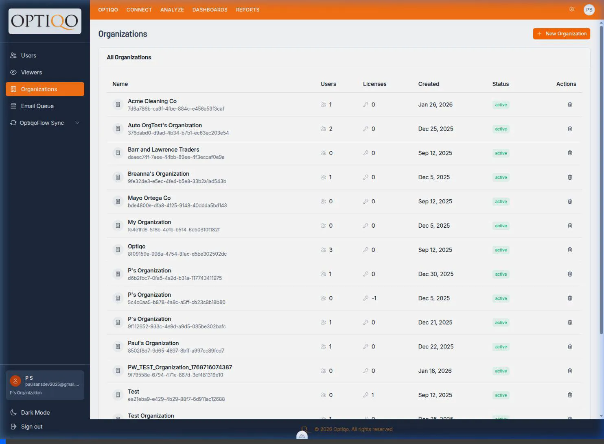
Created demo@beta-healthcare.test with password DemoPass123! (Editor role) via Supabase
Auth Admin API.
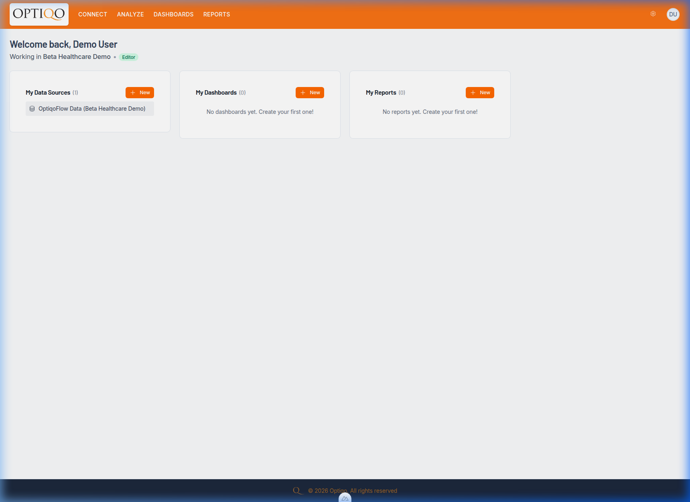
Key observations:
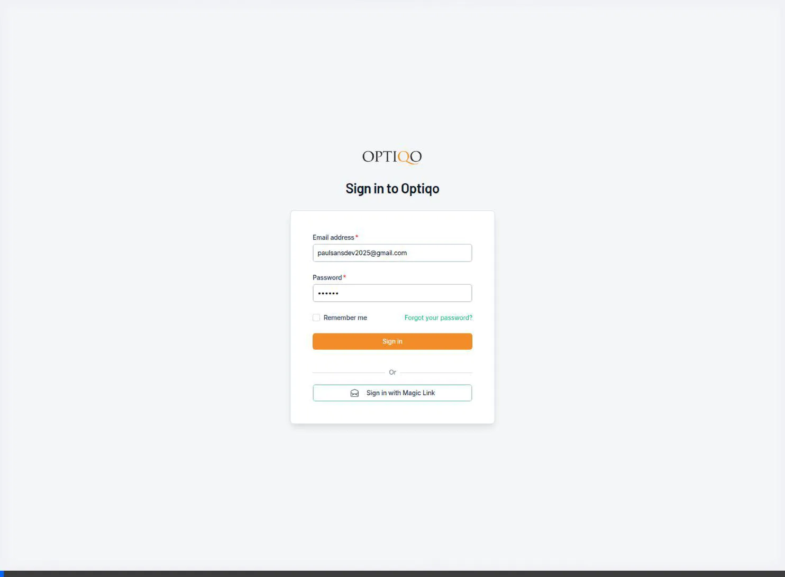
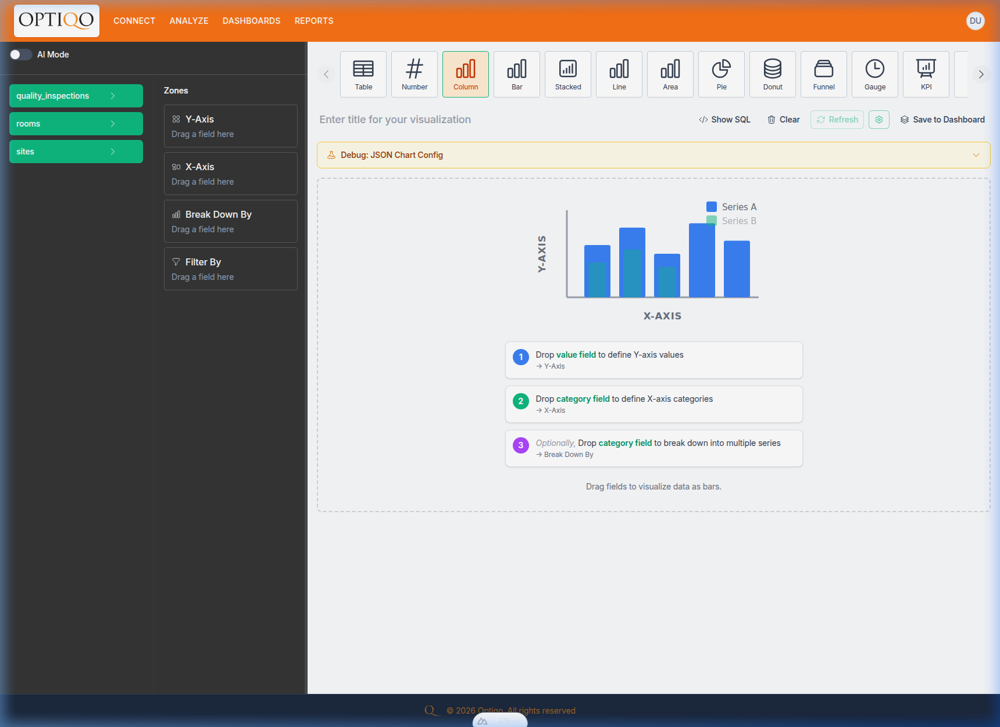
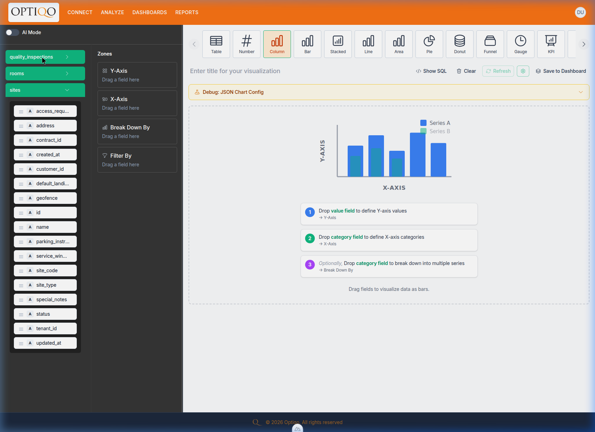
| Isolation Type | Expected | Actual | Status |
|---|---|---|---|
| Table-level | 3 tables (no work_orders) | 3 tables shown | ✅ |
| Row-level | Only Beta Facilities rows | work_orders excluded (0 rows) | ✅ |
| Column-level | sites: 17 cols | 17 cols displayed | ✅ |
| Org scoping | Only "Beta Healthcare Demo" data source | Single data source | ✅ |
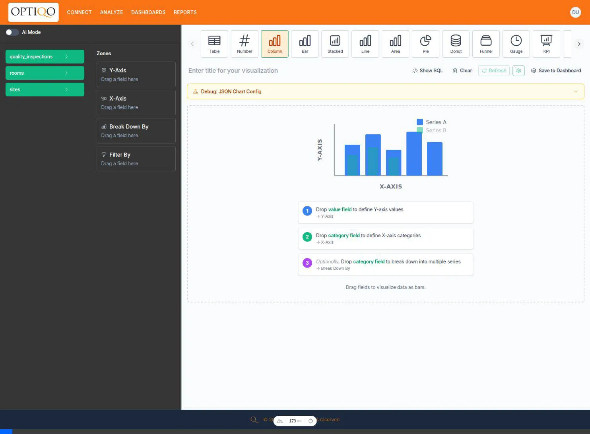
This scenario demonstrates isolating tables using a many-to-many junction table, specifically for the
devices table using device_tenants.
devices, device_tenantsSELECT * FROM optiqoflow.devices WHERE id IN (SELECT device_id FROM optiqoflow.device_tenants WHERE tenant_id = $1)
After creating the Visera Demo organization and logging in, the Chart Builder correctly shows only devices assigned to Visera, preventing access to devices from Beta Facilities or Acme.
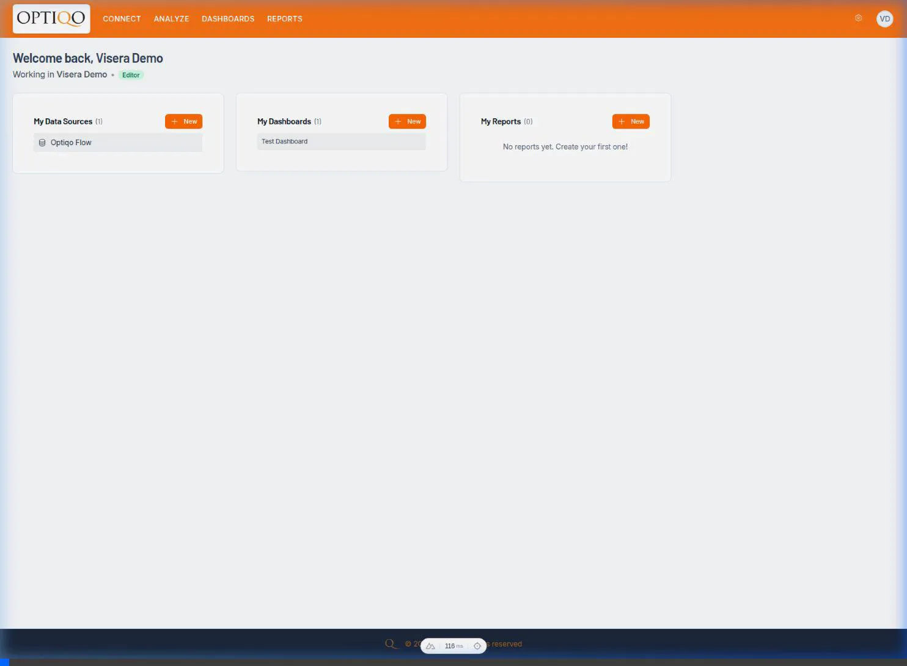
Certain tables lack a direct tenant_id and must inherit isolation from a parent table via a foreign
key, such as inspection_rooms inheriting from quality_inspections.
quality_inspections, inspection_roomsSELECT * FROM optiqoflow.inspection_rooms WHERE inspection_id IN (SELECT id FROM optiqoflow.quality_inspections WHERE tenant_id = $1)
After creating the Puhastusekpert Demo organization and logging in, the Chart Builder securely filters the `inspection_rooms` table, ensuring users only see rooms associated with their authorized `quality_inspections`.